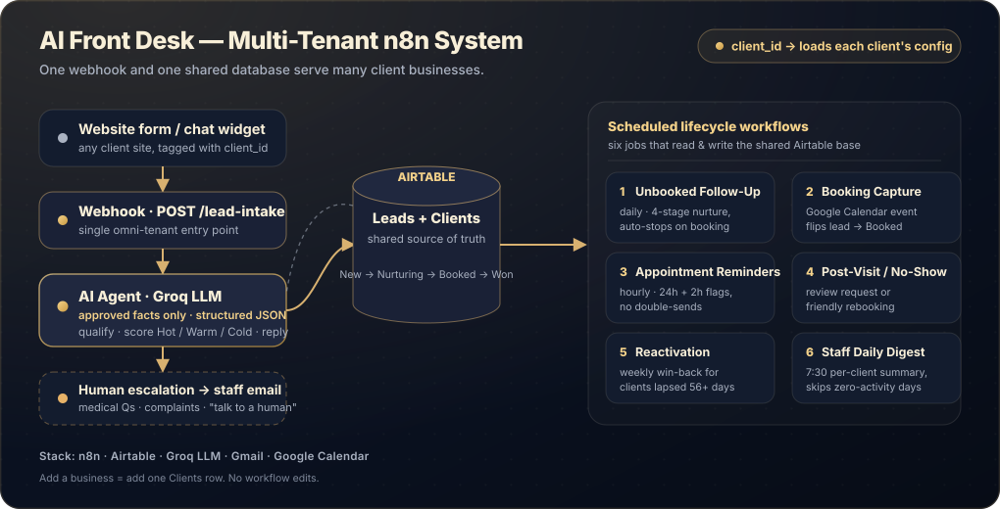
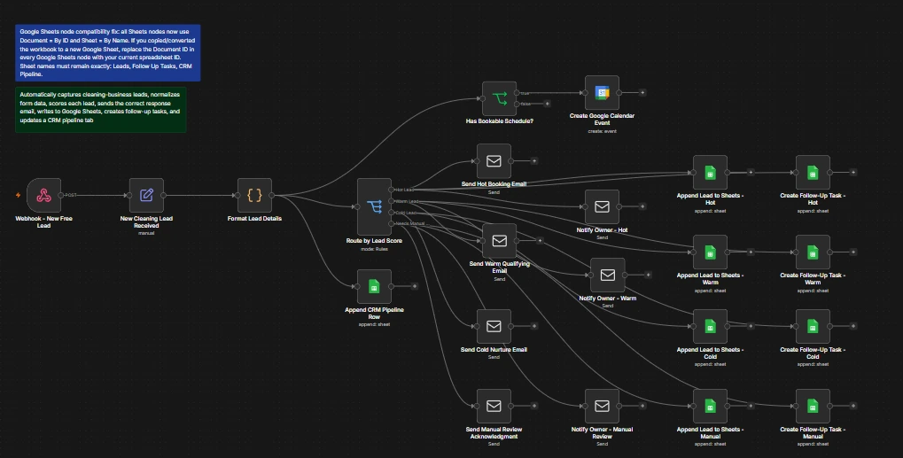
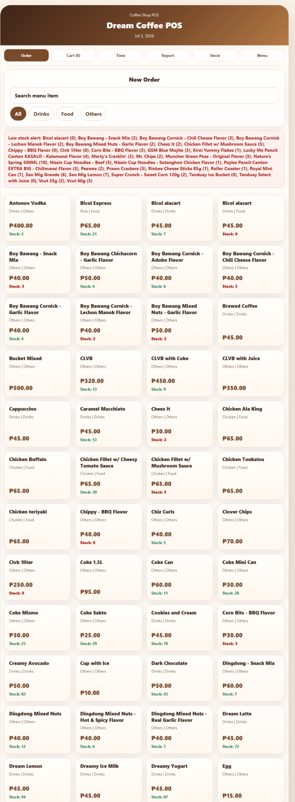

Cleaning businesses, real estate teams, coaches, consultants, agencies, and local service teams receiving inquiries through forms, inboxes, or booking pages.
AI Automation & Tech VA Support
Build cleaner workflows for leads, follow-ups, and daily operations.
I help small businesses organize inquiries, automate repetitive follow-up, clean up CRM workflows, and build simple tech systems that make operations easier to manage.
Lead follow-up
CRM organization
Workflow automation
Documented handoff
Tested workflows · Clear documentation · Loom walkthroughs · Async-friendly PHT / UTC+8 support
AI Automation
Tech VA
Who I help
Best fit for small businesses that receive leads but need clearer follow-up systems.
AI Automation VA · Tech VA · Workflow Automation · CRM & Web Support
Best for teams that want cleaner routing, follow-up reminders, simple email sequences, and fewer missed inquiries.
Useful for small teams that need CRM cleanup, simple trackers, dashboards, documentation, and async-friendly tech support.
About
Practical AI automation with an operations mindset.
I’m Yuki Cordero, an AI Automation and Tech Virtual Assistant focused on practical systems for small businesses. I combine workflow thinking, automation tools, CRM support, and lightweight web/data skills to help owners reduce manual work and keep important tasks visible.
Focus
I specialize in AI automation, workflow organization, CRM support, and simple web systems that help small businesses keep inquiries, tasks, and daily operations easier to manage.
Background
With a Computer Engineering foundation, digital marketing support experience, and operations coordination exposure, I turn manual steps into repeatable workflows with testing, notes, and clear handoff.
Handoff
You can expect async-friendly communication, careful testing, organized documentation, and practical systems that are easier to understand after delivery.

Quick facts
- Hands-on builds
- 3 practical systems completed
- English
- Professional working proficiency
- Languages
- English, Filipino
- Work style
- Async-first · flexible real-time support
Services
What I deliver.
Focused tech support for founders and small teams that need stronger follow-up, cleaner tracking, and easier operations.
Lead Follow-Up Automation
Set up lead capture, follow-up emails, reminders, and tracking so new inquiries receive attention faster and do not rely only on memory.
CRM & Pipeline Support
Organize contact records, lead stages, client notes, and next steps so you can see where each lead stands and what needs attention next.
Workflow Automation Setup
Connect forms, inboxes, spreadsheets, CRMs, Gmail, and calendars so routine updates happen consistently with fewer manual steps.
Trackers & Dashboards
Build simple trackers and dashboards that give better visibility into leads, tasks, reports, inventory, sales, and daily operations.
Website & Tech Updates
Handle practical website edits and content updates so your pages, forms, links, and client-facing details stay accurate and easy to maintain.
Testing & Documentation
Test key scenarios, troubleshoot issues, and provide step-by-step notes or Loom walkthroughs so the system is easier to maintain.
Tools
Tools I work in.
A focused stack for automation, CRM support, web updates, documentation, and day-to-day business operations.
AIContent, logic, and workflow assistance
 ChatGPT
ChatGPT Claude
ClaudeAutomationLead routing, follow-ups, and system triggers
 n8n
n8n Zapier
Zapier Make
MakeCRM / OperationsPipeline cleanup, tracking, and team visibility
 GoHighLevel
GoHighLevel Google Workspace
Google Workspace Monday.com
Monday.comWeb / Build / DesignWebsite updates, files, versioning, and assets
 WordPress
WordPress VS Code
VS Code GitHub
GitHub Canva
CanvaProcess
How we’ll work.
A clear four-step build method that turns a messy workflow into a tested system with handoff notes you can actually use.
Audit
I review your current workflow, tools, lead sources, and repetitive tasks to identify what should be automated or organized first.
You receive: a workflow map, priority list, or recommended next-step plan.
Build
I set up the workflow, tracker, CRM update, website change, or automation based on the agreed goal.
You receive: the first working version of the workflow, tracker, CRM update, or system.
Test
I check whether the system handles missing details, routes information correctly, and produces the right output.
You receive: checked scenarios, fixes, and notes on what was tested before handoff.
Document
I provide updates, notes, and simple instructions so you understand how the system works after handoff.
You receive: handoff notes, a usage guide, or Loom walkthrough when helpful.
Projects
Practical builds for messy workflows.
Explore practical builds that show how I turn messy manual processes into organized systems: lead routing, follow-up automation, CRM actions, tracking dashboards, POS workflows, and handoff documentation.
Project 01 · Multi-tenant automation
AI Front Desk & Follow-Up System for Service Businesses
A resellable, multi-tenant “AI receptionist” built in n8n: one webhook and one shared Airtable base serve many client businesses. It captures leads, replies and qualifies them with AI in seconds, books appointments, sends reminders, chases no-shows, reactivates past clients, and emails staff a daily digest.

New inquiry → waits in an inbox → slow manual reply → follow-up depends on memory → booking lost to a faster competitor
Inquiry → AI replies & qualifies in seconds → logged to Airtable → reminders, nurture, reactivation, and a staff digest run on autopilot
7cooperating workflows
1shared lead database
24/7AI reply & qualify
Multitenant · one build, many clients
- Project type
- Self-initiated multi-tenant build
- Architecture
- One webhook · client_id-driven config
- Tools used
- n8n · Airtable · Groq LLM · Gmail · Google Calendar
- Lifecycle
- New · Nurturing · Booked · Won · Reactivated
Problem
Service businesses like med spas, clinics, and salons lose bookings when inquiries pile up in an inbox: replies are slow, follow-up depends on memory, and no-shows and past clients are rarely chased. Doing this well for several businesses usually means rebuilding the same automation over and over.
Build
I built a multi-tenant n8n system where a single webhook accepts leads from any client’s form or chat widget. An AI agent (Groq) answers using only that client’s approved facts, scores the lead Hot/Warm/Cold, and pushes toward booking — escalating medical questions or complaints to staff instead of guessing. Everything is stored in one shared Airtable base, and six scheduled workflows handle the rest of the lifecycle: nurture, booking capture, reminders, post-visit and no-show, reactivation, and a staff daily digest.
Tools
n8n · Airtable (Leads + Clients tables) · Groq LLM (llama-3.3-70b) · Gmail · Google Calendar
Outcome
One build serves many businesses: onboarding a new client is just adding a row to the Clients table — no workflow edits. The AI stays on approved facts and escalates edge cases, so responses are fast without being risky, and the whole system is documented with sanitized workflow exports for reuse.
Use case
For clinics, salons, and service teams, this keeps every inquiry answered in seconds, follow-up consistent, and staff informed each morning — the kind of system that can be packaged and resold to multiple businesses.
What this proves
This demonstrates my ability to design a production-shaped, multi-tenant automation — AI qualification with guardrails, a shared data model, and seven cooperating workflows — plus the documentation and sanitized exports that make it reusable and easy to hand off.
Project 02 · Portfolio simulation
Smart Appointment Setter for Cleaning Leads
A portfolio simulation showing how one cleaning inquiry can be routed into the right lead path, follow-up email, tracking update, CRM action, and calendar booking when schedule details are complete.

Form submission → manual checking → delayed reply → spreadsheet update → forgotten follow-up
Form submission → lead scored → email sent → tracker updated → CRM task created → calendar booked if valid
4lead paths
10+workflow actions
1 wkbuild duration
n8nautomation core
- Client type
- Portfolio simulation · cleaning business
- Duration
- 1 week
- Tools used
- n8n · Google Sheets · Gmail · CRM · Google Calendar
- Lead paths
- Hot · Warm · Cold · Manual Review
Problem
Cleaning businesses can miss bookings when inquiries are handled manually across lead details, urgency checks, replies, trackers, and follow-up reminders.
Build
I built an n8n workflow that captures new leads, formats the submission, scores each inquiry, sends the correct follow-up, notifies the owner, updates Google Sheets, creates CRM tasks, and books a Google Calendar event when a valid schedule is provided.
Tools
n8n · Google Sheets · Gmail · CRM task flow · Google Calendar
Outcome
The workflow demonstrates four qualification paths and connects 10+ actions that help reduce manual steps for qualifying, following up with, tracking, and scheduling cleaning leads.
Use case
For service businesses, this kind of setup can keep new inquiries visible, trigger faster responses, and support clearer follow-up ownership.
What this proves
This demonstrates my ability to translate a messy lead-handling process into a tested automation with routing logic, notifications, CRM tasks, and clear documentation.

Project 03 · Family business system
Custom POS System for Orders, Inventory, Sales, and Employee Time Tracking
Problem
Manual tracking made it harder to review orders, payments, stock, sales reports, and employee time records in one place.
Build
I built a custom Dream Coffee POS system with order taking, cart checkout, payment tracking, inventory updates, low-stock alerts, sales reports, employee time logs, salary tracking, menu management, and CSV export.
Tools
React · Vite · Firebase · Firestore · CSV export
Outcome
This family business system combines six core functions into one internal tool, making daily orders, stock, payments, reports, and time records easier to review.
Why it matters for Tech VA support
The project shows the operations skills behind strong Tech VA work: understanding a real workflow, structuring data, maintaining records, and turning scattered tracking into a usable system.
What this proves
This demonstrates my ability to build practical internal tools that organize day-to-day operations, reporting, inventory, and team time records in one place.
Portfolio Build Highlights
What the projects demonstrate.
Concrete outputs that show automation logic, workflow structure, internal tools, tracking, and reporting capability.
Multi-tenant AI front desk, AI lead automation, and an operations POS system
Hot, Warm, Cold, Manual Review
Order, Cart, Time, Report, Stock, Menu
Cash, GCash, bank transfer, card, others
Lead scoring, email follow-ups, sheet updates, CRM updates, task creation, and calendar booking.
Sales report and employee time logs
Testimonials
In their words.
The POS system helped us organize orders, sales, inventory, and employee time records in one place instead of tracking everything manually.
Rate
AI Automation VA / Tech VA Support
Starting from $10/ hour
Best for small businesses that need reliable help with lead follow-up, CRM cleanup, workflow tracking, tech updates, and documented operations support.
Book a Workflow ReviewPackage examples
Includes
- n8n workflow setup
- Lead capture and follow-up automation
- Google Sheets automation and trackers
- Email follow-up workflows
- CRM / pipeline cleanup and updates
- Basic appointment-setting systems
- Simple dashboard or operations tracker setup
- Testing, troubleshooting, documentation, and Loom walkthroughs
Tested before handoff
Documentation included
Loom walkthroughs available
Async-first communication
Flexible PHT / UTC+8 support
Small-business focused
Project-based automation builds available after scope review.
Why Work With Me
Practical systems, clear handoff, reliable support.
Practical build experience
I built a multi-tenant AI front desk, an AI appointment-setter simulation, and a custom POS system that demonstrate workflow logic, AI guardrails, operations tracking, and internal tool setup.
Small business focus
I focus on useful, low-friction systems that make leads, tasks, and daily operations easier for owners and small teams to review.
Automation + admin
I can support both automation setup and admin-tech work: CRM updates, testing, tracker maintenance, web edits, and documentation.
Clear remote handoff
I provide practical remote support with async-friendly communication, organized notes, careful testing, and Loom walkthroughs when useful.
FAQ
Questions clients usually ask.
Quick answers before you book a workflow review.
Can you work with my existing tools?
Yes. I can review your current forms, inbox, CRM, spreadsheets, automations, and website tools, then suggest the simplest improvement path.
Do you build from scratch or improve current workflows?
Both. I can clean up an existing workflow or build a new one from a clear process brief.
Can you document the automation after setup?
Yes. Documentation, workflow notes, testing checks, and Loom walkthroughs can be included so the system is easier to maintain.
Can you work asynchronously?
Yes. My default style is async-first, with flexible real-time support when needed for reviews, testing, or handoff.
Do you offer project-based builds?
Yes. Project-based automation builds are available after scope review, especially for lead follow-up workflows, CRM updates, trackers, and small internal tools.
Contact
Let’s review your workflow.
Need help improving a lead process, CRM workflow, tracker, or internal system? Book a workflow review and we’ll identify the highest-impact manual step to organize or automate first.
For a useful first call, think about:
- What workflow do you want to improve?
- What tools do you currently use?
- Where are leads coming from?
- What happens after a lead submits a form?
Tested workflows
Documentation included
Async-first support
Emailhello.yukicordero@gmail.com
Workflow ReviewBook a 30-minute call
LinkedInYuki Cordero
Working hoursMon–Fri · flexible hours